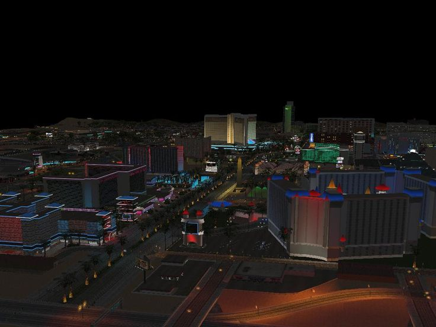

Nuestra Historia.
blablablablablablablalblablablablabla
Volver arriba

Bienvenido a WachingTone! La Ciudad mas grande y hermosa de la Pampa. Una de las 15 ciudades mas lindas de America Latina y Top 3 Mejores Ciudades de Argentina. Fundada en 1845 por Wang Ching, WacihngTone D.C Se presenta como una de las ciudades mas lindas y grandes del pais, con una poblacion de 10.067 habitantes. Nos Ubicamos en la Pampa en el kilometro 33 ruta nacional 20. Y somos la unica ciudad Argentina con una cultura fuertemente arraigada a la Asiatica.
blablablablablablablalblablablablabla